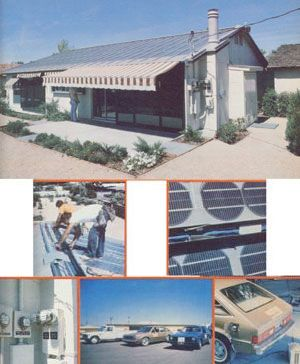

CLOCKWISE FROM MIDDLE LEFT: Each solar cell in the roof panels is encapsulated in plastic?to provide it with protection against hail, rain, and dirt?before being installed by the workers .... This house?built by John F. Long Homes of Phoenix, Arizona?""runs on the sun"". Yet it looks as conventional as any other home on the block with the exception of the roof, which contains 7,200 solar cells capable of producing over 6,000 watts of electricity .... A close-up view of one roof panel shows the four-inch photovoltaic cells in detail .... Fill 'er up with electricity! . . . Long 's firm has three car models currently available for conversion to electric power: the Chery Luv truck, the Chevrolet Citation, and the Datsun B310 . . . .These meters record outgoing?as well as incoming?electrical flow. Surplus power is credited toward any purchased wattage